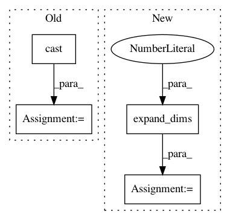

deeb372d527073813abb40a2b9a209ad050f1e44,tensorflow_transform/analyzers.py,,mean,#Any#Any#Any#Any#,532
Before Change
values=tf.ones_like(x.values),
dense_shape=x.dense_shape)
ones_values = tf.sparse_reduce_sum(sparse_ones, axis=0, keep_dims=True)
x = tf.cast(x, output_dtype)
ones_values = tf.cast(ones_values, output_dtype)
x_values = tf.sparse_reduce_sum(x, axis=0, keep_dims=True)
else:
ones_values, x_values = tf.ones_like(x), x
After Change
x = x.values
x_size, x_sum = tf.reduce_sum(tf.ones_like(x)), tf.reduce_sum(x)
// Put back batch dimension.
x_size = tf.expand_dims(x_size, axis=0)
x_sum = tf.expand_dims(x_sum, axis=0)
elif isinstance(x, tf.SparseTensor):
sparse_ones = tf.SparseTensor(
indices=x.indices,
In pattern: SUPERPATTERN
Frequency: 4
Non-data size: 4
Instances
Project Name: tensorflow/transform
Commit Name: deeb372d527073813abb40a2b9a209ad050f1e44
Time: 2018-07-31
Author: tf-transform-dev@google.com
File Name: tensorflow_transform/analyzers.py
Class Name:
Method Name: mean
Project Name: broadinstitute/keras-rcnn
Commit Name: 7b1a03e58023300ad7bb14bc7e1aec5e4d7dd298
Time: 2017-08-26
Author: allen.goodman@icloud.com
File Name: keras_rcnn/layers/losses/_rpn.py
Class Name: RPNRegressionLoss
Method Name: compute_loss
Project Name: dmlc/gluon-nlp
Commit Name: ab9e353c928218d12a977112d241c152ebcf06a9
Time: 2020-01-27
Author: lausen@amazon.com
File Name: src/gluonnlp/model/bert.py
Class Name: BERTEncoder
Method Name: hybrid_forward
Project Name: OpenNMT/OpenNMT-tf
Commit Name: 4d49910b3f0696102f813fb5ba451b934a4a579c
Time: 2021-03-25
Author: guillaumekln@users.noreply.github.com
File Name: opennmt/utils/losses.py
Class Name:
Method Name: cross_entropy_sequence_loss